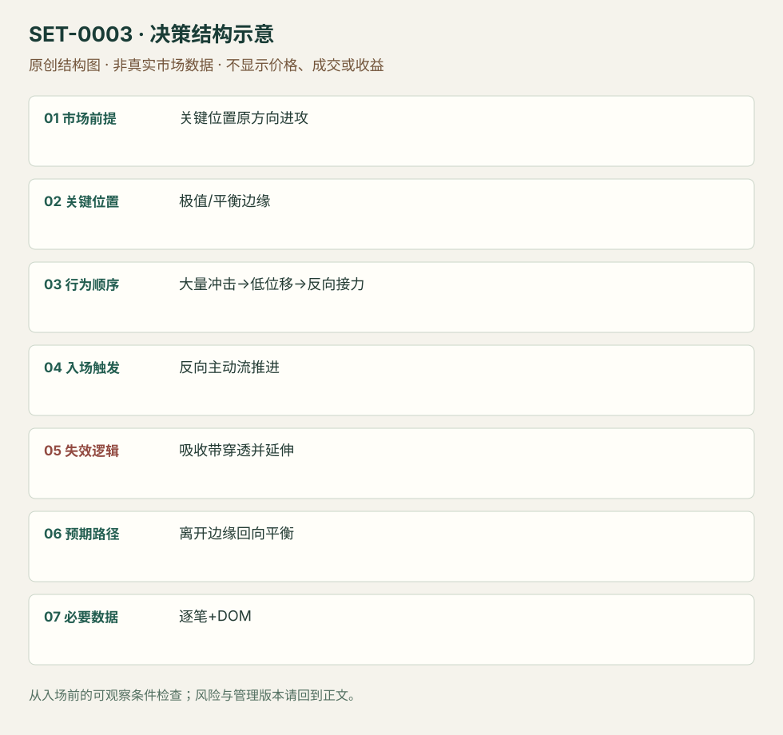

关键位置吸收后的反转
Absorption Reversal · SET-0003 · reviewed · v1.0.0
盈利证据：not_established。审查范围与来源版本见第13节；未知字段保留缺失原因。
1. 名称与快速概览
在事先标记的极值或边缘，主动成交持续冲击却无法推进价格；等反方向主动流开始推进后考虑反转。吸收区域被重新穿透并继续成交推进即失效。
记录口径：PA supporting；必要数据 time_and_sales、DOM、bid_ask_volume。名称性质：编辑性描述名，英文保留来源术语以便检索。reviewed 只表示本条规则与证据记录审查通过，盈利状态为 not_established。
2. 本质与行为假说
可观察的是成交量、价格位移和补充挂单之间的关系。Jigsaw区分挂单意图与实际成交：持续主动卖单而低点停住支持卖盘被承接的解释；仅有大买单或Delta背离不证明吸收，更无法证明订单属于同一机构。
3. 适用市场与环境
选择熟悉且能提供可靠逐笔和深度数据的集中竞价期货；先比较正常每档成交和推进速度。厚薄市场节奏不同，不能把某合约的绝对手数直接迁移。突破极值失败的背景增强，但不是每次吸收都反转。
来源实际讨论市场：黄金期货GCM1（已查看图例）和合约未明确的期货文字案例。
Session：来源未说明统一交易段与时区。编辑日内边界：先锁定所选合约的交易日、现金活动段和截止时刻，在该计划段内进出；不从GCM1截图推定纽约时间。
跨市场：本版不主张已经验证的跨市场迁移；更换市场必须重定数据来源、流动性与session。
4. 出现前的观察清单
必要：真实bid/ask成交分类与时间序列；关键位置已标记；高成交与低位移同时发生。增强：同侧流动性反复补充。否决：只有静态DOM截图、价格仍连续推进、数据掉包或聚合丢失过程。
5. 形成过程与状态转换
关键位置到达 → 主动冲击增加 → 价格推进停滞且供给持续承接 → 等反方向主动成交接力 → 价格离开吸收带 → 检查回测能否守住。触发前若原冲击方向重新推进，取消。
6. Entry trigger 与执行方式
原文允许等待其他交易者集中向反方向推进再参与，并非必须抄最低价。用成交节奏、同方向穿价速度及回测反应描述“roll”；市价主动成交会牺牲几档，限价可能排队未成交。
7. Invalidation 与止损逻辑
分析失效是吸收带承接不再有效，价格穿过并继续推进。保护单放在带外须考虑一段价格而非假定单一价位；如果逐笔掉线，订单流假说已不能继续核对。具体buffer与时间阈值来源未说明。
8. Exit、target 与 trade management
先以事前相邻平衡、旧极值或当天已形成结构为参考；反方向流停滞或原方向重新占优应减仓/退出。短线交易不能把每次流向变化都升级为全天反转。各管理阈值需要个人记录后测试。
9. 常见 variations
单价格、多档吸收及趋势回撤末端吸收是位置/执行变体。同一被动吸收也可显示为footprint或delta，不因换显示工具另计数。Iceberg是可能的订单机制，不能当作每个吸收的同义名。
10. 失败方式与不交易条件
正常亏损：离开带后重新穿透。未成立：把大挂单当成成交承接。偏离：还没有反向接力就抢入。数据局限：隐形单、撤单、重建逐笔和成交方向分类误差；静态图不能复原队列。
11. 与相近 setups 的区别
12. 图表与案例解读
文字案例在157.67：原文描述几百手显示bid但累计几千手成交并继续补充。这里仅核对了文章文字，未查看视频DOM过程；不得推断合约、时间戳、真实入场或收益。公开Jigsaw PDF中的反转图是概念示意，不能充当真实成交案例。
另外实际查看Bookmap Fig 1黄金GCM1热图：1835附近多次卖出冲击，价格低点未有效下移，随后回升；CVD下行与低位价格保持可同时观察。来源称三次停止单冲击，但图不包含订单回执。画面支持承接与回升，不足以核验入场成交、止损或收益。
- [VIS-000055] GCM1黄金热图低位承接与回升，图注明示的停止单类型是作者解释；没有实际订单核验。；定位：Fig 1 – Gold swing low bids absorb three attempts。GCM1黄金热图低位承接与回升，图注明示的停止单类型是作者解释；没有实际订单核验。 验证：chart_viewed。

本地原创示意（VIS-000060，非真实市场数据）：

小屏阅读可打开原尺寸示意图并缩放。

此图用于对照识别顺序与风险定义；不计入真实案例覆盖率。
视觉材料元数据与查看范围
- VIS-000055 · real_source_chart / structure_and_trigger / chart_viewed
品种：GCM1；日期：未知/不适用；周期：未知/不适用；时区：未知/不适用
日期未在图中核对；周期未在图中核对；时区未在图中核对；来源图表不是成交审计 - VIS-000060 · synthetic_structure_diagram / illustration_only / generated_not_market_evidence
品种：未知/不适用；日期：未知/不适用；周期：未知/不适用；时区：未知/不适用
无真实品种、日期或价格：这是结构示意
13. 证据、分歧与未知项
AXIA案例由Jigsaw转载，因此两份AXIA/Jigsaw转载不能当两个独立族；本条另外使用Peter Davies的原始订单流讲义支持观察原则。吸收、耗尽与主动反转可能共存，但观察证据不同。
- [EVD-000003] Richard Bailey / Jigsaw转载，《Order Flow Absorption & Market Reversals by Axia Futures》，SRC-0003；定位：正文157.67案例及最后一段。支持：持续主动卖出未能推进；可等待反方向动量再进入
- [EVD-000004] Peter Davies，《Practical Application of Order Flow, Part 2》，SRC-0002；定位：PDF页2、9–13，Reading Order Flow / Reversals / Momentum。支持：挂单与成交分开；吸收可能跨多档；反向主动成交构成另一观察
- [EVD-000100] SRC-0033；定位：Liquidity Dynamics / Fig 1 Gold。支持范围：旧低点附近主动卖出遇持续bid承接，价格难以下穿；只有反向主动买盘实际推进才能将吸收与反转联系。原站三次Sell Stop run为作者解释，不是订单审计。
Bookmap提供另一来源族的吸收定义及黄金画面；其平台营销和对真实流动性的强断言不被当作收益证据。具体承接带外保护、时间撤销和目标仍是编辑管理模块。
14. 可用于复盘的检查表
- ☐ 下单前的前提可核对：关键位置原方向进攻
- ☐ 事前标记位置：极值/平衡边缘
- ☐ 行为按顺序出现：大量冲击→低位移→反向接力
- ☐ 实际触发符合选定版本：反向主动流推进
- ☐ 事先写明本次否定条件：吸收带穿透并延伸
- ☐ 目标/路径只用当时已知信息：离开边缘回向平衡
- ☐ 数据满足 逐笔+DOM；记录时间、点差、滑点、队列和未成交
- ☐ 记录截止平仓及规则偏离；正常亏损不事后改成“未成立”
15. 后续验证问题
如何用成交/位移比区分吸收与普通暂停？同样成交量背景下比较等roll与抢入；纳入队列、延迟、漏单和不同厚度合约。记录撤单与成交分开，不从CVD推断某一个大户。
双向相关导航
- SET-0040 单向伸展末端的主动流耗尽反向短打 耗尽关注主动冲击减少；本条关注大量主动冲击仍无法推进。
- SET-0041 阶梯跳价后低量区保持的延续 主动roll需要突然反向冲击，不要求事先看到大量成交被承接。
- SET-0042 堆叠对角失衡区的保持与再推进 0003 大量主动成交无推进作吸收反转，本条先已发生推进/主动区，后测试保持。
- SET-0043 逆势主动失衡失败后的顺势回归 0003 从大量成交无推进看反转；本条必须特定逆势区被反穿并恢复旧趋势。
- SET-0044 价格破位而累计 Delta 背离的反转 0003 看局部大量卖成交不再压价，本条须累计流与价格的多段方向背离。
- SET-0045 冰山受阻、流转向与弱冲洗后的再拍卖 0003 局部吸收即可反向，本条须整个先供给、深跌、流转向、再受阻、弱冲洗序列。
- SET-0047 厚市场被动承接的缓慢磨过 0003 用受阻成交反转，本条被动买方沿突破路径持续承接来支持延续。